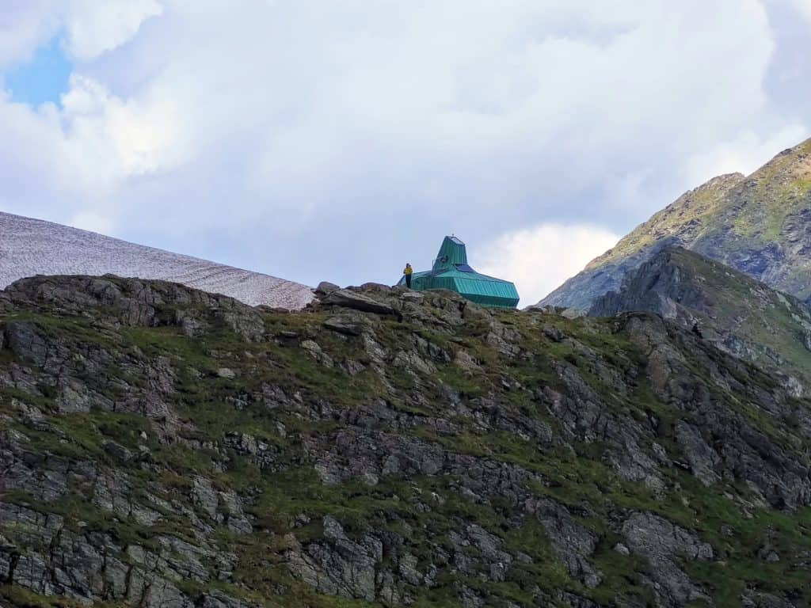

Cabana Negoiu - Custura Sărății - Vf. Negoiu - Lacul Călțun (circuit)
Pe 27 iunie 2020 am pornit de la Cabana Negoiu spre Lacul Călțun pe unul dintre cele mai frumoase și tehnice trasee din Munții Făgăraș.
De la Cabana Negoiu am urcat pe Vârful Șerbota pe Muchia Șerbota, am parcurs Custura Sărății spre Vârful Negoiu, iar de pe vârf am coborât la Lacul Călțun prin Strunga Doamnei. Ne-am întors la cabană pe la Strunga Ciobanului și Piatra Prânzului.
Întregul circuit are 13 km lungime cu 1600 metri diferență pozitivă de nivel. L-am parcurs în ritm lejer, de drumeție, în 13 ore.
Cum am ajuns la Cabana Negoiu
Am ajuns în Gara Avrig cu trenul, din București.
Din Gara din Avrig am chemat un taxi care să ne ducă în Porumbacu de Sus, și de acolo să urce spre Cabana Negoiu, atât cât îi va permite starea drumului forestier.
- Telefon Taxi Avrig: 0269 994
Taximetristul nu știa drumul spre Cabana Negoiu, așa că am pus GPS-ul spre Castelul de Lut Valea Zânelor și de acolo am continuat pe drumul forestier, urmând indicatoarele și marcajul turistic triunghi albastru spre Cabana Negoiu, până unde s-a putut merge cu un Logan, fără a-i forța prea mult suspensiile.
Taxiul ne-a lăsat la 11 km de Cabana Negoiu, unde am ajuns după 4 ore, dar am făcut și un mic ocol pe la Cascada Șerbota.
Cu o mașină cu garda mai înaltă se poate înainta pe drumul forestier până în apropierea fostei cariere de piatră sau mai sus, lângă o microhidrocentrală, scutind astfel încă vreo 5 km de mers. De acolo se continuă pe jos timp de 2-3 ore, pe o potecă lată, nu foarte abruptă, care urcă în serpentine până la Cabana Negoiu (1546 m).
Cu altă ocazie am urcat la Cabana Negoiu de la Cabana Poiana Neamțului (aflată la 14 km de Avrig), trecând mai întâi pe la Cabana Bârcaciu.
Circuit Cabana Negoiu - Lacul Călțun

Circuit Cabana Negoiu - Lacul Călțun
Cabana Negoiu - Vârful Șerbota - Custura Sărății - Șaua Cleopatrei - Vârful Negoiu - Strunga Doamnei - Șaua Portița Călțunului - Lacul Călțun - Șaua Portița Călțunului - Strunga Ciobanului - Piatra Prânzului - Cabana Negoiu
- Lungime: 13 km
- Durată: 10 - 13 ore
- Diferență de nivel: 1600 m D±, 1600 m D-
- Dificultate: mare: zone expuse, porțiuni cu lanțuri, pericol de cădere în gol, limbi de zăpadă, pericol de alunecare
- Echipament : încălțăminte cu aderență bună; gheruțe/mini-colțari, cască, piolet (până în iulie pot fi întâlnite limbi de zăpadă)
- Sezonalitate: iunie – octombrie, numai pe vreme bună, când nu se anunță furtuni. Iarna pericol de avalanșă
- Track GPS: download
Dificultate
Dificultatea traseului este mare. Custura Sărății și Strunga Ciobanului sunt zone expuse, asigurate cu lanțuri, unde e bine să nu ai frică de înălțime.
Echipament tehnic
La altitudini mari, pe văile umbrite, poteca era acoperită de zăpadă la sfârșitul lunii iunie. Pentru a traversa aceste porțiuni în siguranță, am venit pregătiți cu echipament tehnic (piolet, gheruțe/mini-colțari, cască).
Dacă aluneci pe limbile de zăpadă înghețată, prinzi rapid viteză și doar pioletul te poate ajuta să te oprești. Bețele de trekking ajută la păstrarea echilibrului, dar nu sunt utile în cazul unei căderi.
Pe 25 iunie 2020 Serviciul Public Județean Salvamont Sibiu a emis această avertizare:
Zăpada rămasă în zona înaltă a munților Făgărașului (sub formă de depozite pe vâlcele şi scocurile înclinate - așa zisele „limbi de zăpadă”) reprezintă un risc extrem pentru cei care încearcă să le traverseze fără a avea un echipament minim, care include încălțăminte adecvată (ghete de munte sau bocanci) și obligatoriu, bețe de schi sau piolet, colțari, coardă sau semicoardă pentru asigurare. O căzătură pe o astfel de „limbă de zăpadă” este de cele mai multe ori fatală.
Atenție sporită la traversarea acestor zone!
Etapele traseului
1. Cabana Negoiu - Vârful Șerbota
Marcaj: bandă albastră
Durată: 2h30
Dificultate: medie
Rododendron în drum spre Vârful Șerbota
De la Cabana Negoiu pornim spre Vârful Șerbota pe bandă albastră, traseu comun cu punct roșu și cruce albastră. După aproximativ 600 metri traseul se bifurcă. Conform indicatorului o luăm pe poteca din stânga.
Până pe Vârful Șerbota (2331 m) urcușul este susținut iar pe ultima porțiune poteca urmează creasta și este expusă pe alocuri.
Pe Muchia Șerbota am întâlnit multe tufe de bujor de munte (rododendron sau smârdar), care înflorește în fiecare an în luna iunie.
În Căldarea Șerbotei și pe Valea Șerbota, pe la 2000 m altitudine, erau păstori cu oile.
Valea Șerbota formează mai jos cascada cu același nume, pe care am vizitat-o cu o zi înainte, în drum spre Cabana Negoiu.
Vârful Negoiu văzut de pe Șerbota
2. Vârful Șerbota - Custura Sărății - Șaua Cleopatrei - Vârful Negoiu
Marcaj: bandă roșie
Durată: 2h30 - 3h
Dificultate: mare
Custura Sărății, Munții Făgăraș
Custura Sărății este considerată cea mai dificilă porțiune din traseul de creastă al Munților Făgăraș. Este o creastă îngustă ce se întinde între Vârful Șerbota și Șaua Cleopatrei.
Parcurgerea custurii nu este recomandată începătorilor sau celor care au teamă de înălțime.
Timp de vreo 2 ore înaintăm anevoios pe o potecă îngustă și expusă și traversăm mai multe zone dificile, asigurate cu cabluri și lanțuri din oțel ca într-un final să ajungem la indicatorul din Șaua Cleopatrei.
În Șaua Cleopatra se poate ajunge direct de la Cabana Negoiu pe marcaj triunghi albastru, prin partea de vest a Muchiei Șerbota. Traseul este accesibil iar peisajul este la fel de spectaculos.
Indicatorul din Șaua Cleopatrei
Din Șaua Cleopatra (2355 m) se ajunge pe Vârful Negoiu în aproximativ 30 de minute, ultima porțiune spre vârf necesitând puțină cățărare ușoară.
În caz de vreme nefavorabilă, Custura Sărății poate fi ocolită pe traseul marcat cu bandă galbenă, prin Căldarea Pietroasă, care pornește de pe Vârful Șerbota (2331 m) și se intersectează cu traseul de creastă marcat cu bandă roșie în Șaua Cleopatra (2355 m).
Atenție mare la porțiunile acoperite de zăpadă.
Urcare spre Vârful Negoiu din Șaua Cleopatra
3. Vârful Negoiu - Strunga Doamnei - Șaua Portița Călțunului - Lacul Călțun
Marcaj: bandă roșie și bandă galbenă (porțiune scurtă, care ocolește Strunga Dracului)
Durată: 1h30 - 2h
Dificultate: medie/mare
Vârful Negoiu (2535 m)
Vârful Negoiu (2535 m) este al doilea vârf ca înălțime din țară, după Vârful Moldoveanu (2544 m).
De pe vârf coborârea este destul de abruptă și în curând întâlnim primele limbi de zăpadă. Pentru a traversa în siguranță aceste porțiuni am folosit pioletul.
După 1 km ajungem la Strunga Doamnei (2348 m). Traseul de creastă a fost deviat pe la Strunga Doamnei, pe bandă galbenă, pentru a se evita Strunga Dracului, porțiune închisă permanet din cauza instabilității rocilor.
Strunga Doamnei
Strunga Doamnei, Munții Făgăraș
Coborârea prin Strunga Doamnei spre Căldarea de la Strunga Dracului nu ne-a pus probleme. Ne-am folosit de lanțul montat acolo, aflat în stare foarte bună.
Din Căldarea de la Strunga Dracului până în Șaua Portița Călțunului poteca traversează alte porțiuni umbrite, aflate de data această la nord de creastă, acoperite de zăpadă moale. Ne-am deplasat cu grijă, ajutându-ne de piolet.
Eram pentru prima dată pe traseul cuprins între Vârful Negoiu și Lacul Călțun și am fost pur și simplu uimiți de frumusețea peisajelor.
Vârful Lespezi învăluit în ceață, Creasta Fierăstrăului, lacul Călțun văzut de pe Creasta Crenelată, Peretele Călțun, Valea Laița și Vârful Lăițel au făcut ca această tură să fie una de neuitat.
Traseul prin Strunga Dracului este închis din cauza căderilor de pietre
Spre Portița Călțunului
Creasta Fierăstrău cu vârfurile în nor
Lacul Călțun văzut de pe Creasta Crenelată, Munții Făgăraș
4. Lacul Călțun - Șaua Portița Călțunului - Strunga Ciobanului - Piatra Prânzului
Marcaj: bandă roșie; cruce roșie
Durată: 2h30
Dificultate: mare
Lacul Călțun, Făgăraș

Refugiul Călțun de lângă Lacul Călțun
După o pauză destul de lungă pe malul Lacului Călțun (2135 m) ne-am întors în Șaua Portița Călțunului (2259 m) și am mers pe bandă roșie aproximativ 250 m până am intersectat traseul marcat cu cruce roșie, care ocolește Creasta Fierăstrăului.
După traversarea mai multor limbi de zăpadă și a unor stânci ude și alunecoase am ajuns la Strunga Ciobanului (2288 m).
Dificultate Strunga Ciobanului
Spre Strunga Ciobanului
La urcarea din Căldarea Ciobanului spre Strunga Ciobanului și la coborârea din horn poteca este abruptă iar traversarea terenului accidentat ne-a dat ceva bătăi de cap.
Deși sunt montate lanțuri și cabluri, înaintarea a fost anevoioasă din cauza rocilor destul de mari care se desprindeau din potecă.
Pentru mai multă siguranța am purtat cască și am păstrat distanță mare între noi.

Urcarea prin Strunga Ciobanului
Coborâre prin Strunga Ciobanului
După Strunga Ciobanului coborârea este mai ușoară și ajungem în curând la Piatra Prânzului.
5. Piatra Prânzului - Cabana Negoiu
Marcaj: triunghi albastru
Durată: 2h
Dificultate: medie
De la locul numit Piatra Prânzului coborâm spre Cabana Negoiu pe marcaj triunghi albastru.
Piatra Prânzului
Trecem iar pe lângă multe tufe de rododendron în floare și coborâm pe poteca abruptă, spre Valea Sărății.
Tufă de rododendron, Munții Făgăraș
După o scurtă pauză lângă râu, continuăm spre Cabana Negoiu, într-o coborâre lină.
Pe ultima porțiune din traseu poteca intră în pădure și traversează mai multe podețe suspendate, aflate în stare bună.
Până să ajungem la cabană am traversat mai multe podețe
Am ajuns la cabană obosiți, dar la timp pentru a ne bucura de priveliște la apusul soarelui.
Apusul văzut de la Cabana Negoiu